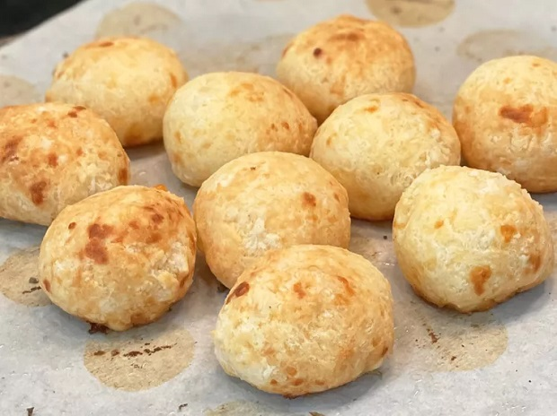

Descrição
“Pão de queijo” é um delicioso lanche feito com farinha de tapioca.
No Brasil, é apreciado a qualquer hora do dia, principalmente no café da manhã e nas reuniões familiares.
Pão de queijo é um pequeno pão de queijo assado, um lanche popular e café da manhã no Brasil.
É uma receita tradicional brasileira, originária do estado de Minas Gerais.
Ingredientes
- 1kg de pão de queijo;
- 1 copo (requeijão) de oleo;
- 2 copos (requeijão) de leite;
- 3 ovos;
- 400g de queijo mussarela;
- Sal a gosto.
Modo de preparo
- Em uma vasilha misture o polvilho e o sal;
- Ferva o leite com o óleo;
- Jogue o liquido fervido e misture com uma colher grande;
- Espere esfriar e despeje o queijo ralado e os ovos;
- Misture a massa com a mão amassando bem;
- Faça bolinhas do tamanho que preferir;
- Asse em forno bem quente até dourar.